Reaching the target is only part of the task
An underwater vehicle carrying an arm cannot be planned as a point moving through free space. The arm changes what fits through a passage, and the final vehicle pose determines whether the tool can reach its target with useful dexterity.
MANTA—Manipulator-Aware Navigation with Topology-guided Adaptation—connects three decisions: access through the environment, placement of the vehicle and arm at the task, and adaptation when the map changes.
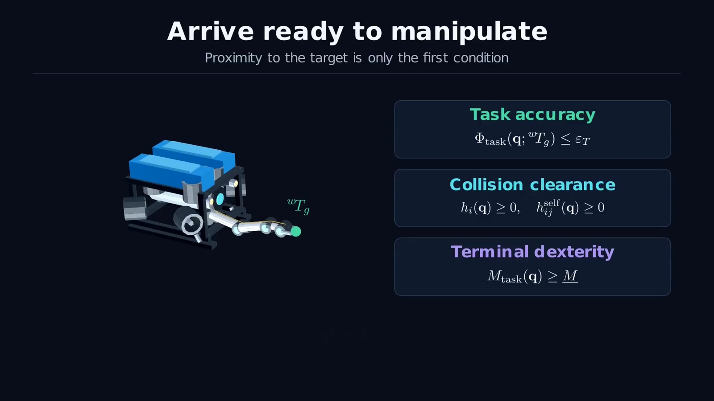
The global layer searches four vehicle variables while holding the arm in a compact transit posture. The refinement layer then recovers the coupled vehicle–arm motion, including the five arm joints.
Search a simpler space without forgetting the robot’s size
Conservative volumes enclose the robot geometry. A distance field converts the clearance around each volume into a quantity that can be checked efficiently. For a sphere center $c_i(q)$ with radius $\rho_i$, the clearance is
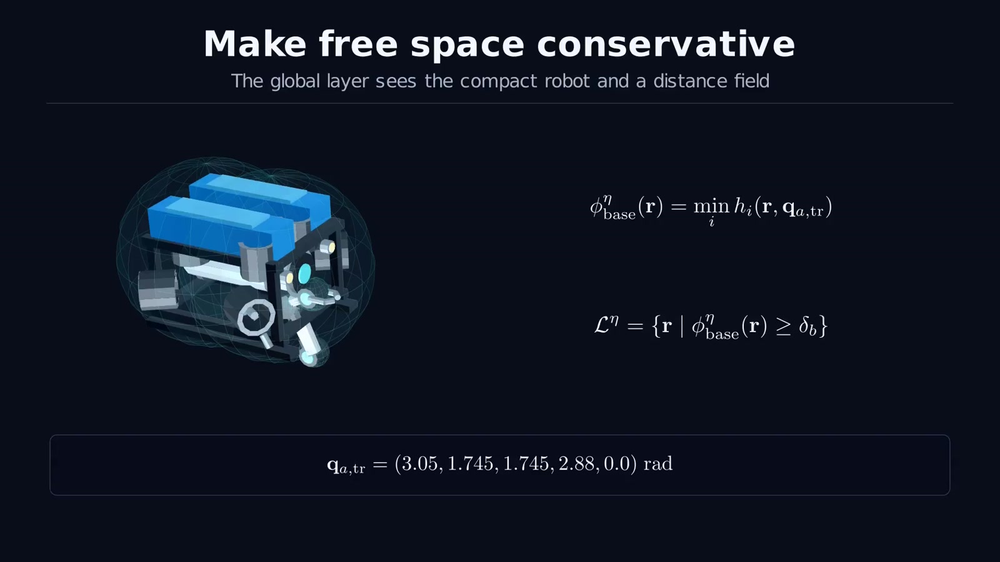
Before extracting routes, MANTA screens candidate terminal vehicle poses around the target. These candidates should offer clearance and a useful tool approach. The planner therefore searches toward an operating region, rather than an arbitrary point near the target.
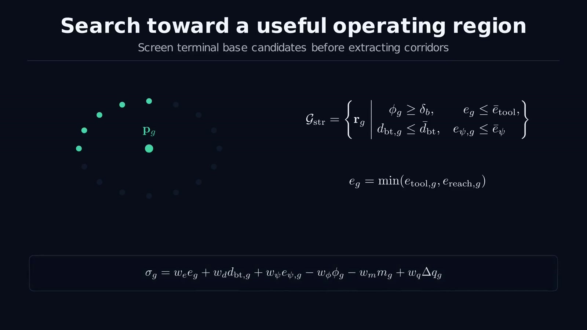
A* then finds passage candidates in the reduced vehicle lattice. Its edge cost balances travel, heading changes, clearance, and optional risk and route-reuse terms. Alternative corridors retain different ways through the environment for later refinement and recovery.
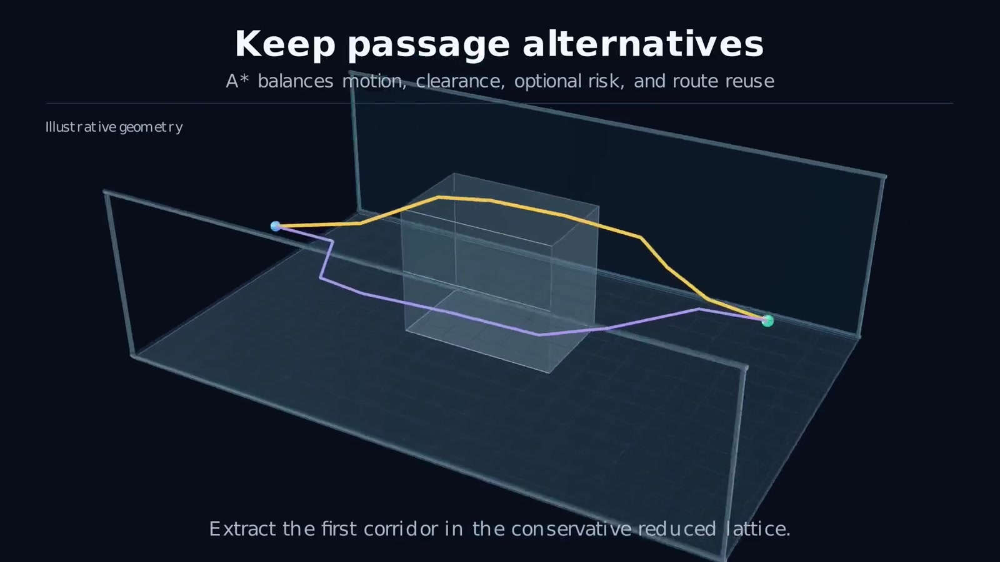
Smooth the route, then let the vehicle and arm inform each other
The discrete route becomes an open cubic B-spline. Corridor anchors and tube penalties keep the smooth curve tied to the selected passage, especially around turns and narrow gates.
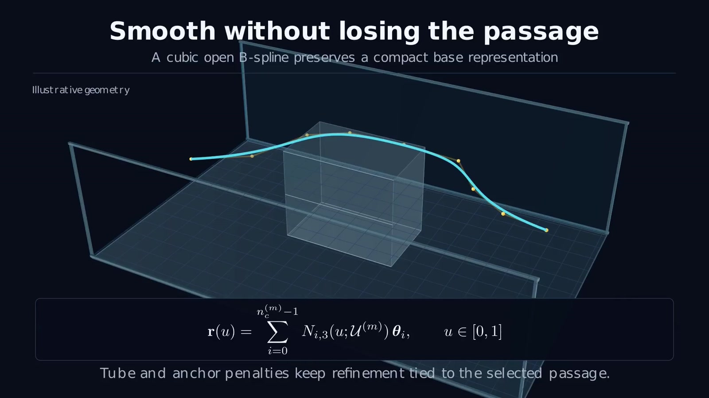
MANTA alternates vehicle-path and arm-trajectory updates. Vehicle refinement accounts for clearance and arm-dependent feasibility; arm refinement accounts for articulated collision, compact transit, smooth motion, terminal task error, and dexterity.
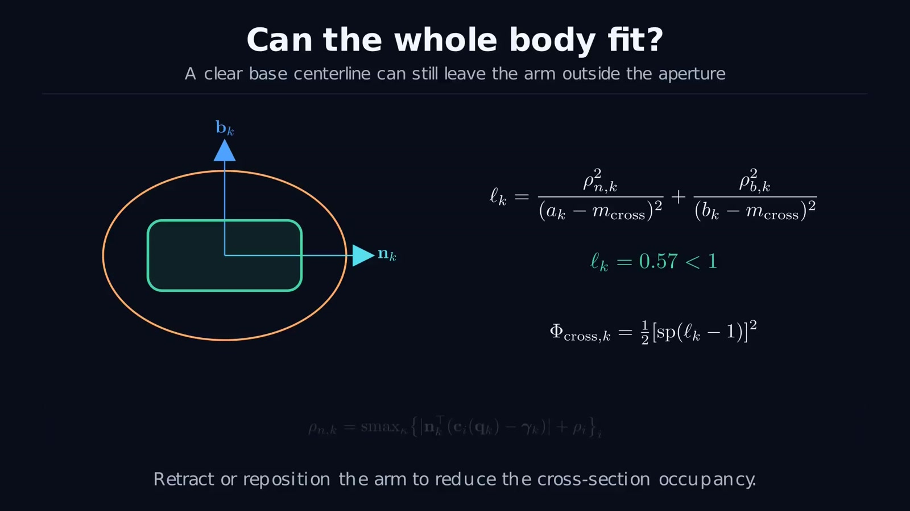
Moving the vehicle changes what the arm can reach. Moving the arm changes the occupied volume. Exchanging those two kinds of information connects navigation and manipulation without performing the entire global search in the full configuration space.
A low optimization cost is not a feasibility certificate
Smooth penalties guide the optimizer, but acceptance uses explicit checks of the articulated trajectory. MANTA validates robot–environment and self-collision conditions at the checked configurations, then repairs the terminal segment when the task remains inaccurate. A repaired candidate is accepted only after geometry is checked again.
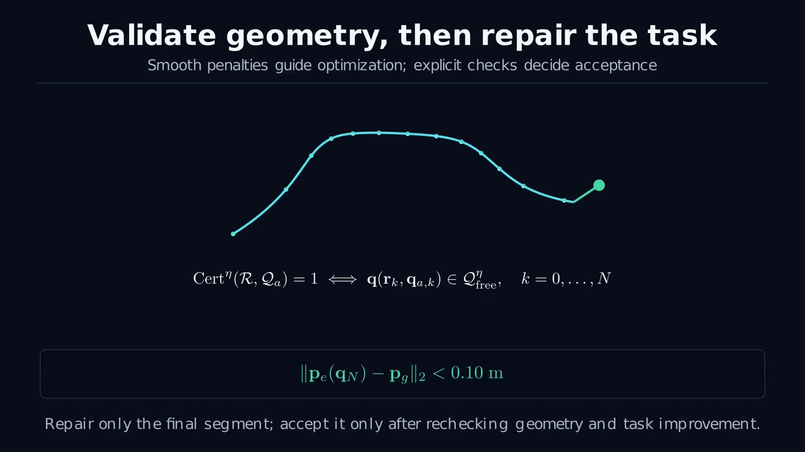
For the reported benchmark, task success requires articulated collision freedom, conservative clearance of at least 0.01 m, and terminal tool-position error below 0.10 m. These thresholds define the reported success rate.
The displayed certificate is based on the trajectory configurations checked by the planner. It should not be read as an unconditional continuous-time collision guarantee under arbitrary tracking error.
Repair the remaining plan when an update matters
A map update does not automatically require replanning everything. The supervisor checks whether the changed region affects the remaining executable trajectory and whether its clearance is still sufficient. If the suffix remains valid, execution continues.
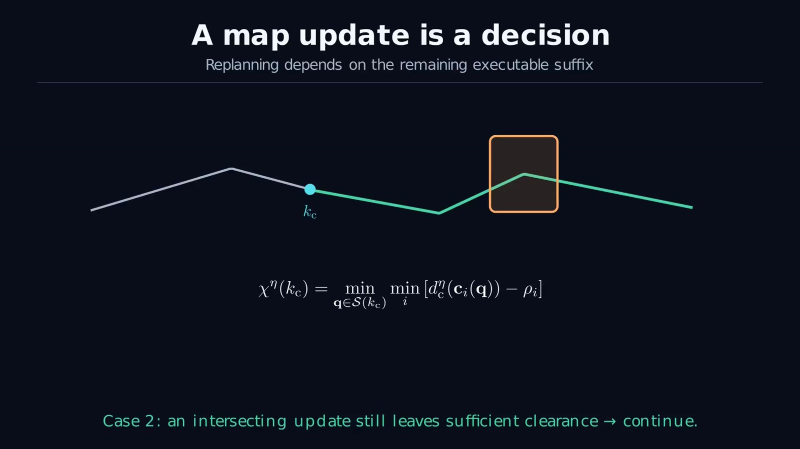
If the active suffix becomes invalid, the system holds the vehicle, recovers the arm toward its compact transit posture, and attempts a direct repair. When necessary, stored branch information supports reconnection through another passage. Refinement and validation precede resuming motion.
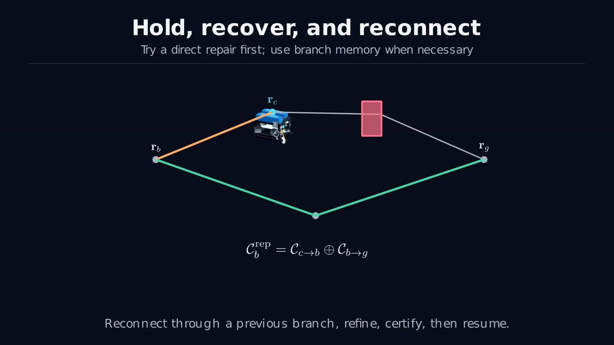
Measure task success, clearance, motion, and time together
The planning benchmark uses 120 matched start–goal queries: four environments, three passage-width settings, and ten queries per setting. MANTA is compared against RRT-Connect and BiTRRT on the same queries.
| Method | Task success | Median minimum clearance | Median arm motion | Median planning time |
|---|---|---|---|---|
| MANTA | 92.5% | 0.100 m | 1.11 rad | 8.55 s |
| RRT-Connect | 70.8% | 0.015 m | 3.84 rad | 1.37 s |
| BiTRRT | 70.0% | 0.015 m | 3.30 rad | 1.27 s |
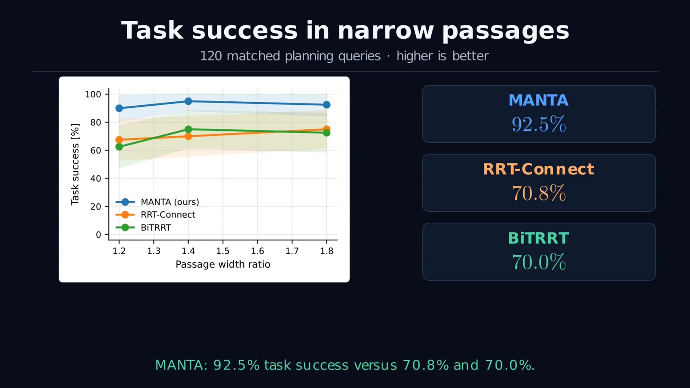
The tradeoff is explicit: MANTA produces larger clearance and less arm motion, but takes longer to plan. The baselines have approximately 100% geometric success in this experiment; their lower task success is principally associated with terminal tool error. Finding a collision-free path is therefore insufficient to complete the task.
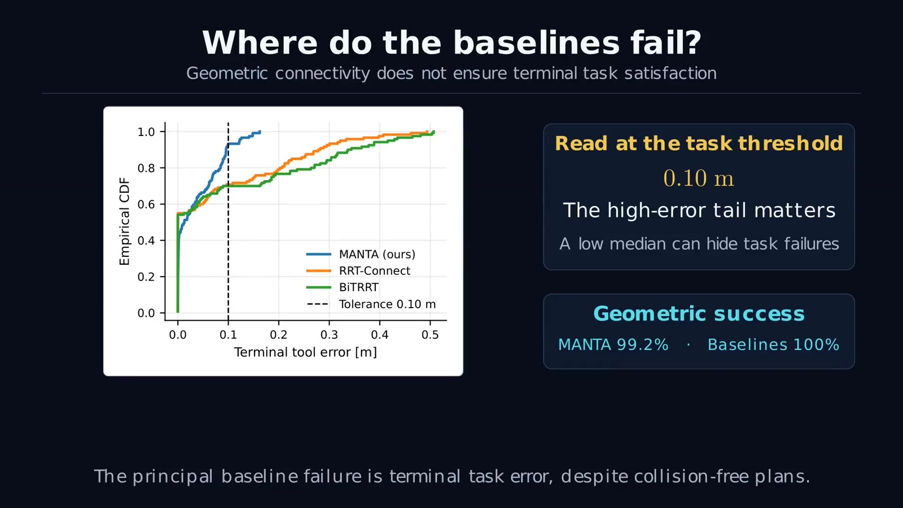
What the ablations reveal
Removing terminal repair reduces task success from 92.5% to 40.8%. Removing the stow/smoothness terms increases task success to 95.8%, showing that the complete objective trades some task feasibility for compact, smoother motion. The full method does not maximize every metric independently.
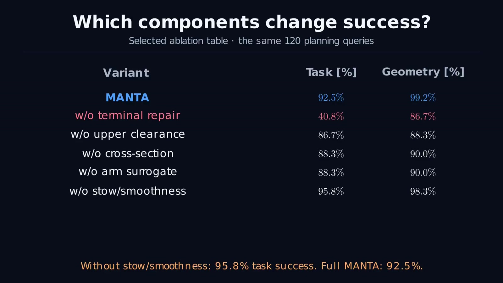
The output of this project is an articulated plan and its adaptation logic. MANTA Control explains how the learned execution layer tracks the resulting reference.